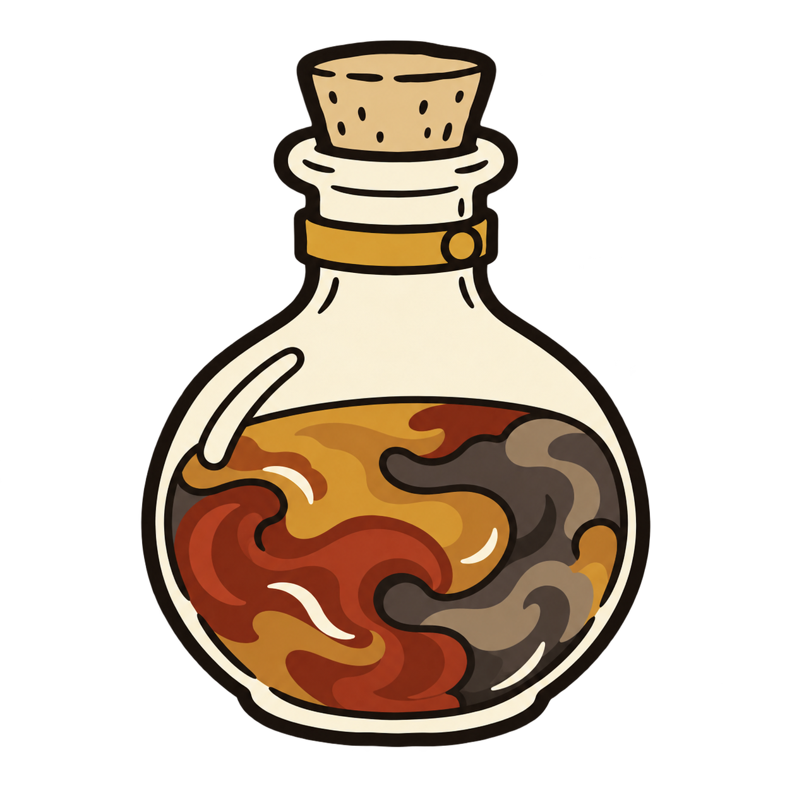
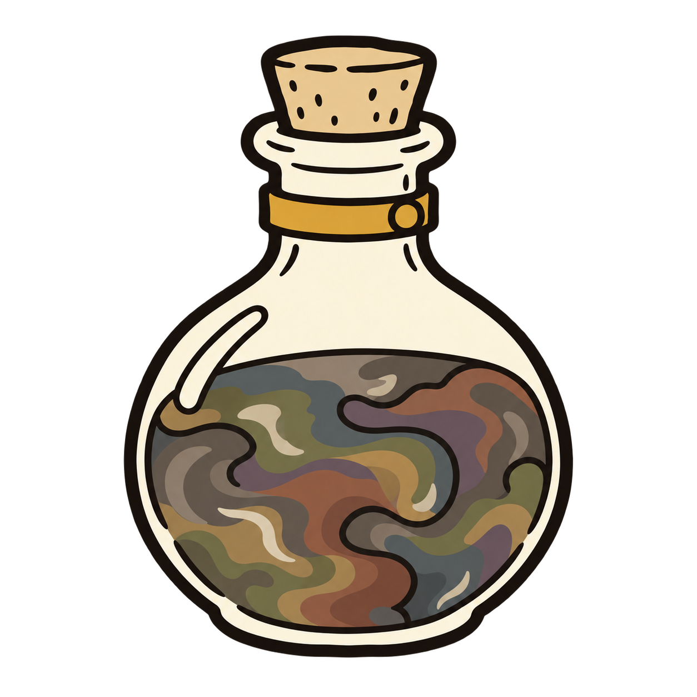
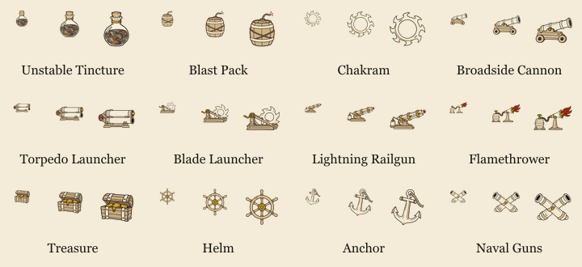

Unstable Tincture — Murky Colors
Smoky slate, mossy olive, dusty plum, rust, ochre and taupe mingle in a roiling mixture. The muted colors leave its possible effects open-ended.
Full collection · Saved path and exact edit prompt · Previous squid correction



Small icons

Each group shows 22, 36 and 48 pixels from left to right.